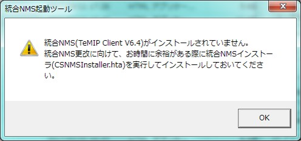

≪TeMIP使用の経緯≫
XXXXXXXXX
XXXXXXXXX
XXXXXXXXX
XXXXXXXXX
XXXXXXXXX
XXXXXXXXX
XXXXXXXXX
XXXXXXXXX
| インストール方法 |
|---|
①インストールしたい端末のエクスプローラー上で『\\XXXXXX』を打つ
②フォルダのパス要求
統合NMS担当より払い出されたアカウント＆パスを入力
アカウント：account パス：
③インストーラ場所：\\XXXXX
ファイル：インストーラをダブルクリック
オプションを選択出来るようになるまでしばらく待つ
④インストールオプション選択画面
▽Install/Upgrade(English)をチェック
※日本語ではなく英語版をインストール推奨
(猪股様曰く、日本語版だと画面表示に不具合が出るとのこと)
▽所属ネットワーク
『IPフロント』を選択
⇒セットアップをクリック
上記参考手順はこちらに配置
(\\XXXXXXXX)
参考手順について
[統合NMS(TeMIPClient) インストールマニュアル.pptx]
(上記元ファイル配置場所
http://XXXXXXaspx
| 過去のアラートの見方 |
|---|
①タブ [Window] → [OC View] 選択
②新しく出てくるWindowの OC NAME[IPF-SV-00.oc] を右クリック
→ [search] → [all alarms]
⇒すべてのアラートが読み込まれ始めるので待ち
③メール件名、サーバ名、日時等検索欄を使用して対象アラートを探す
新しいアラートは再読み込みしないと出てこない
→画面右真ん中の[Alarm Found]の横にあるチェックマークを押すと再読み込みし始める
(既存のものもすべて読み込み始めるので時間が掛かります)
| TeMIPが起動できない場合 |
|---|
下記エラーが出た場合は、バージョンのアップデートが必要

たいてい統合NMS担当からメールでバージョンアップの連絡が手順と一緒に来ているはずなので、
指示に従ってバージョンアップ作業を実施。
それでもうまくいかない場合は、一度TeMIPをアンインストール後に再度インストール手順を実施してください。
NMS担当から頂いた手順はここ (\\XXXXXXXX)に配置してます。
（気づいた方はファイルの配置をお願いします。）